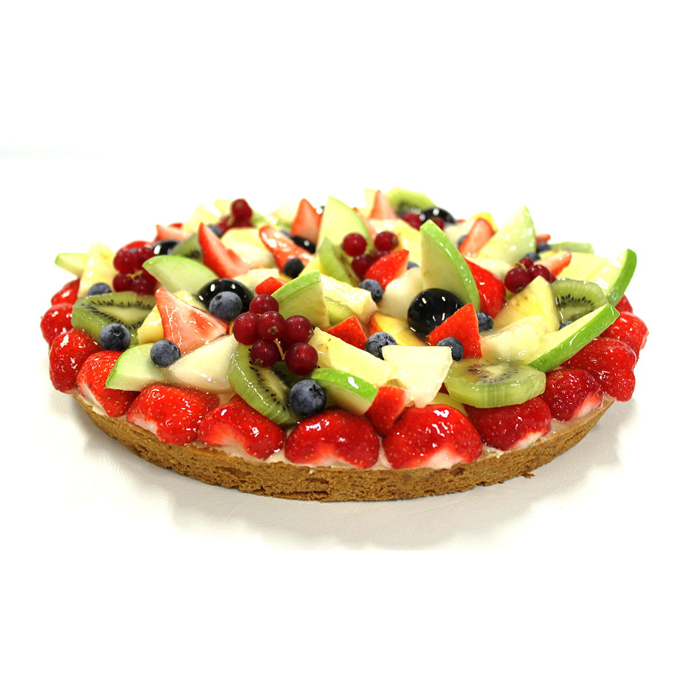

1. Verse Ingrediënten: Onze toewijding aan het gebruik van de allerbeste, verse ingrediënten maakt het verschil. We selecteren rijpe, sappige aardbeien en een assortiment van
2. Authentieke Recepten: Onze aardbei en fruitvlaaien worden volgens traditionele recepten bereid, waarbij we vasthouden aan beproefde methoden die generaties lang zijn doorgegeven. Dit waarborgt de authentieke smaak en kwaliteit die onze klanten verwachten.
3. Kwaliteitscontrole: We hechten veel waarde aan kwaliteitscontrole. Elke vlaai wordt zorgvuldig geïnspecteerd voordat deze onze bakkerij verlaat, om ervoor te zorgen dat deze aan de hoogste normen voldoet.
4. Passie voor Perfectie: Onze bakkers hebben een diepgewortelde passie voor perfectie. Ze streven ernaar om elke aardbei en fruitvlaai tot in de kleinste details te perfectioneren, van de consistentie van de vulling tot de textuur van het deeg.
